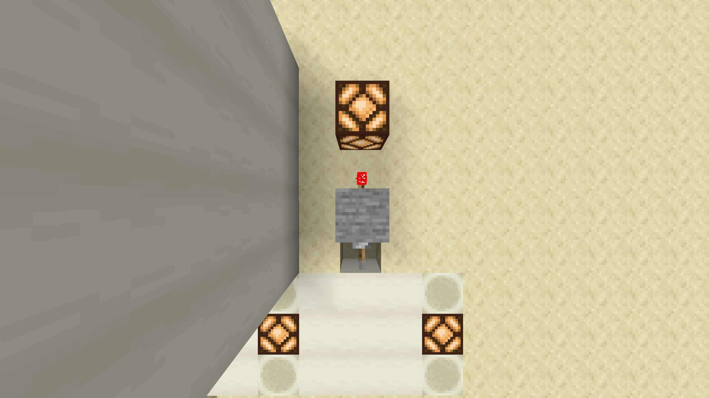

NOT gate

Maecenas ac lacus orci. Integer sed varius elit. Curabitur fermentum orci ut pellentesque tincidunt. Nullam tincidunt turpis nisl, ultrices consequat sem egestas ac. Nam sit amet risus eu augue aliquet tincidunt quis at purus. Nullam non dolor ultrices, egestas lacus pulvinar, consectetur lacus. Sed ac lectus lobortis, aliquet lectus efficitur, gravida urna. Aenean aliquet enim et ligula sodales cursus. Nullam sodales ipsum quis ante malesuada, ut ultricies sapien pellentesque. Maecenas non est accumsan neque viverra sagittis a rhoncus lorem.
History
Curabitur leo neque, venenatis nec tellus ac, euismod tincidunt augue. Morbi feugiat ex sit amet dui mollis, in pellentesque metus ultricies. Vivamus consequat maximus nulla sed molestie. Nunc rutrum mauris fermentum, ultrices quam non, pulvinar urna. Proin rutrum magna id dignissim aliquam. Ut erat nulla, venenatis a nisl non, viverra pulvinar sem. Donec dapibus nec nibh eget lobortis. Maecenas at congue enim, at euismod ipsum. Pellentesque tempus leo lectus, id blandit elit tincidunt a. In non nisi erat. Class aptent taciti sociosqu ad litora torquent per conubia nostra, per inceptos himenaeos. Integer quam mi, egestas sed sodales laoreet, molestie sit amet est. Proin aliquam neque non tortor dapibus, quis pretium lorem interdum. Sed vehicula quam at ipsum pretium accumsan. Quisque dui leo, luctus vel lacus ut, elementum commodo libero. Aliquam consequat justo nec felis interdum laoreet. Nam in gravida augue. Nunc nec aliquet nulla. Duis eu aliquam mi. Donec eu mauris facilisis nisi semper tincidunt. Suspendisse vehicula nibh eget erat bibendum commodo. Cras rutrum eleifend enim. Donec vulputate neque sed libero ornare ultricies. Pellentesque vel libero convallis nulla vehicula sagittis. Orci varius natoque penatibus et magnis dis parturient montes, nascetur ridiculus mus. Interdum et malesuada fames ac ante ipsum primis in faucibus. Suspendisse commodo arcu quis augue fringilla maximus. Pellentesque semper mi risus. Praesent eget accumsan ex, ac egestas magna. Morbi non feugiat libero. Sed sed rutrum magna.
| Input | Output |
|---|---|
| A | |
| 0 | 1 |
| 1 | 0 |